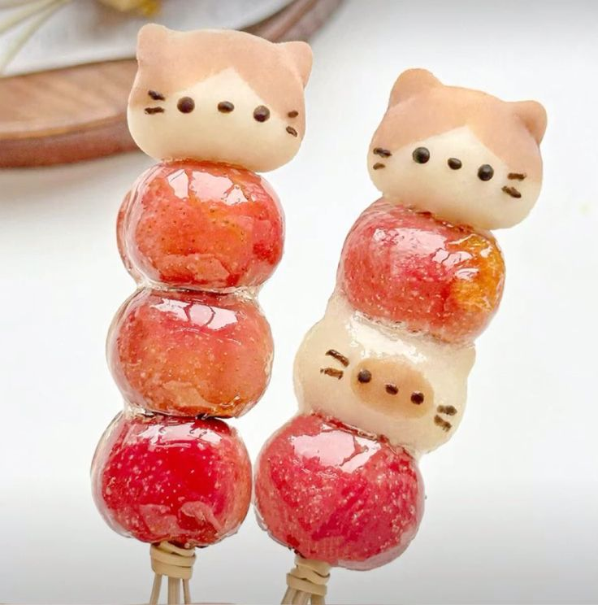
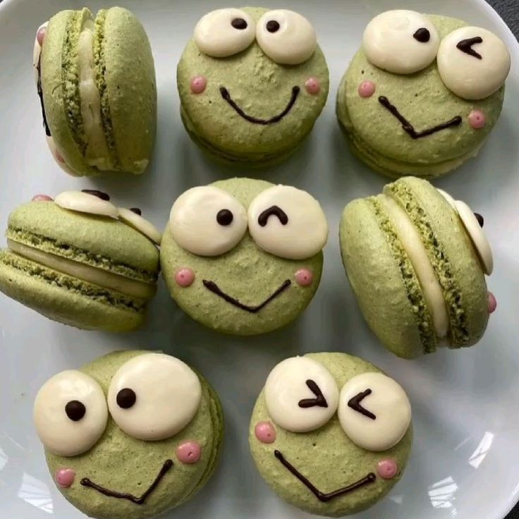
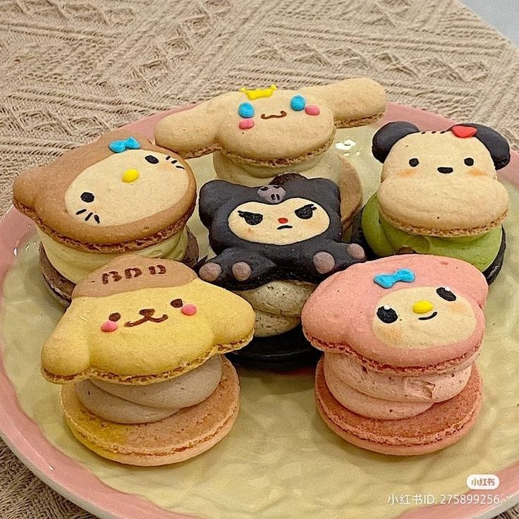
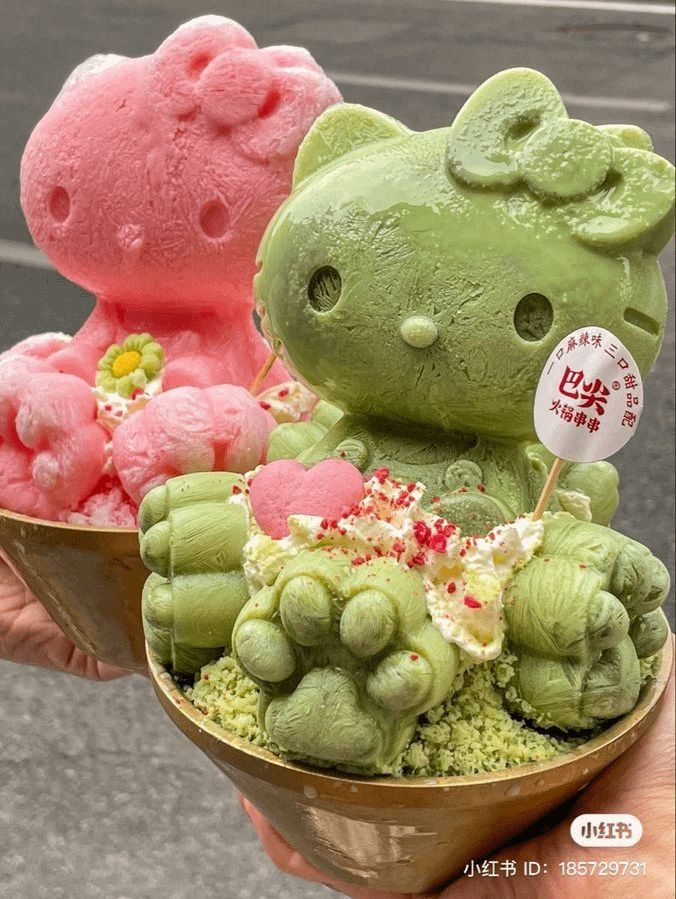
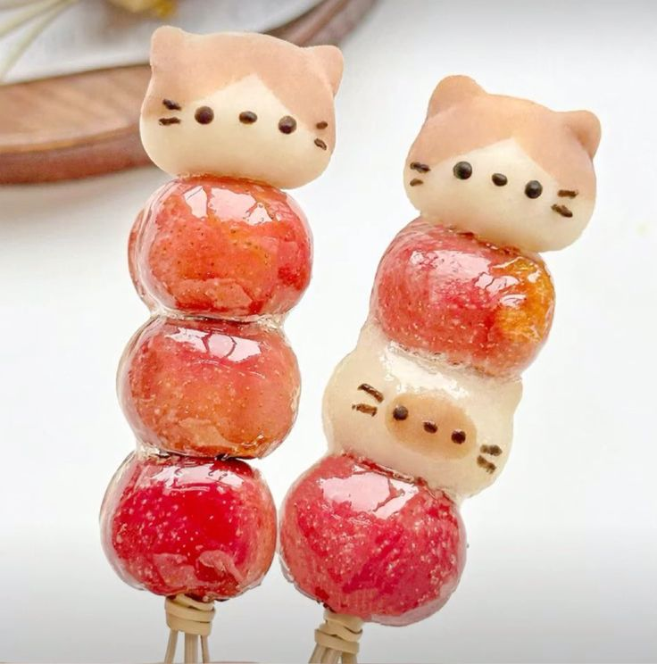
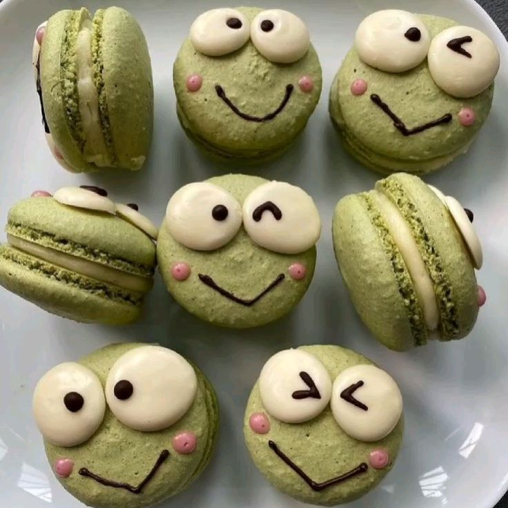
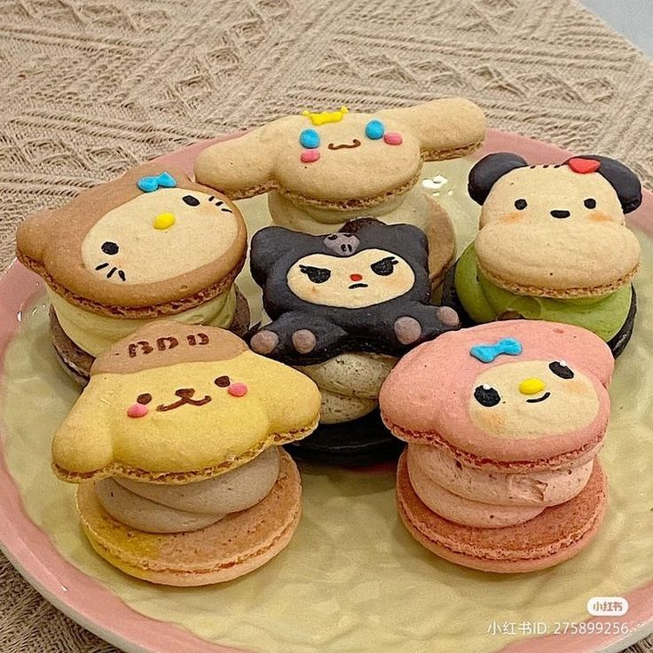
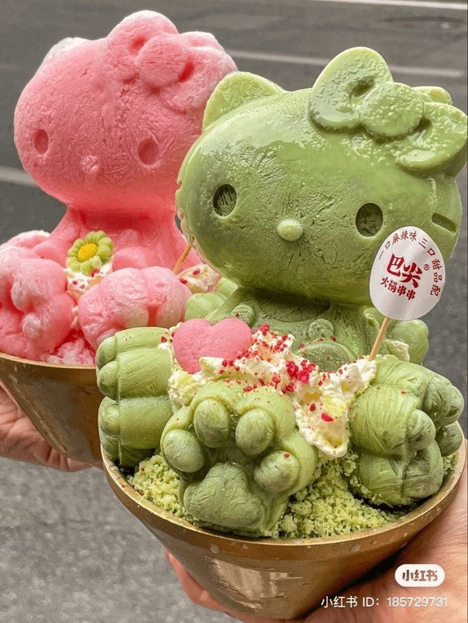

It's important to eat guilt-free
life is too short to starve yourself imo, it's better to take these cute pictures of desserts, as long as it's not every day in big quantity.
 







life is too short to starve yourself imo, it's better to take these cute pictures of desserts, as long as it's not every day in big quantity.